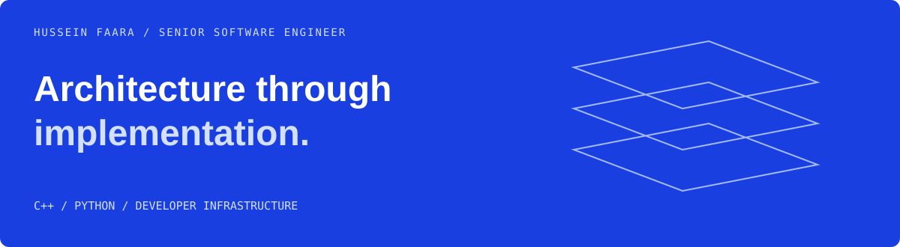

A technical hiring-manager view. Scope, engineering judgment, and evidence.

Hussein Faara
Senior Software Engineer — systems, infrastructure, and scientific software
I work where architecture meets implementation: dependency graphs, native/Python boundaries, storage abstractions, schedulers, parsers, and the hidden costs in a critical path.
Engineering portfolio · Email · Repositories
01 / Competencies in context
Developer infrastructure
Reproducible dependency resolution, build caching, packaging, and distribution across Linux, macOS, Windows, x86_64, and ARM. Tools include Pixi, rattler-build, ccache, and CI/CD.
Engineering focus: reduce duplicated work and improve the developer feedback loop.
Systems architecture & storage
Shared abstractions and APIs supporting multiple storage engines and applications. Consolidated ten internal databases into one foundation.
Engineering focus: make the boundary between applications and storage easier to work with.
Performance & systems programming
High-performance C++, profiling across C++ and Python, data structures, compression, and parser diagnostics. Optimized a shared logging path with a 20% latency improvement.
Engineering focus: understand the cost before changing the implementation.
Scientific & distributed computing
Cheminformatics, molecular representations, graph algorithms, native/Python interfaces, HPC, scheduling, and distributed execution.
Engineering focus: make computation-heavy workflows practical to build and run.
Technical leadership
Architecture ownership, engineering standards, cross-team influence, and infrastructure that enables other developers. 300+ engineers enabled across my work.
Selected engineering outcomes and context →
02 / Inspect the work
RDKit / C++ core contributions
Developer tooling / personal projects
- sourceguard — developer tooling to keep prohibited source patterns out of new changes.
- rdkit_smiles — C++ exploration of lexing, grammar, parsing, and molecular graph construction.
- check-old-commit-date — pre-commit tooling around stale commit timestamps.
03 / How I approach a system
map the dependencies
↓
measure the critical path
↓
remove unnecessary work
↓
validate correctness + performance
↓
make the improvement repeatable
Technical interests & tools
Core: C++, Python, Linux, build systems, CI/CD, SQL, Docker, scientific computing.
Exploring: remote build caching, distributed CI, Rust build tooling, Go backends, and storage systems.
Next / Infrastructure that other teams build on
I’m interested in senior systems, developer infrastructure, platform, and performance engineering opportunities.
Engineering portfolio · Email · Repositories